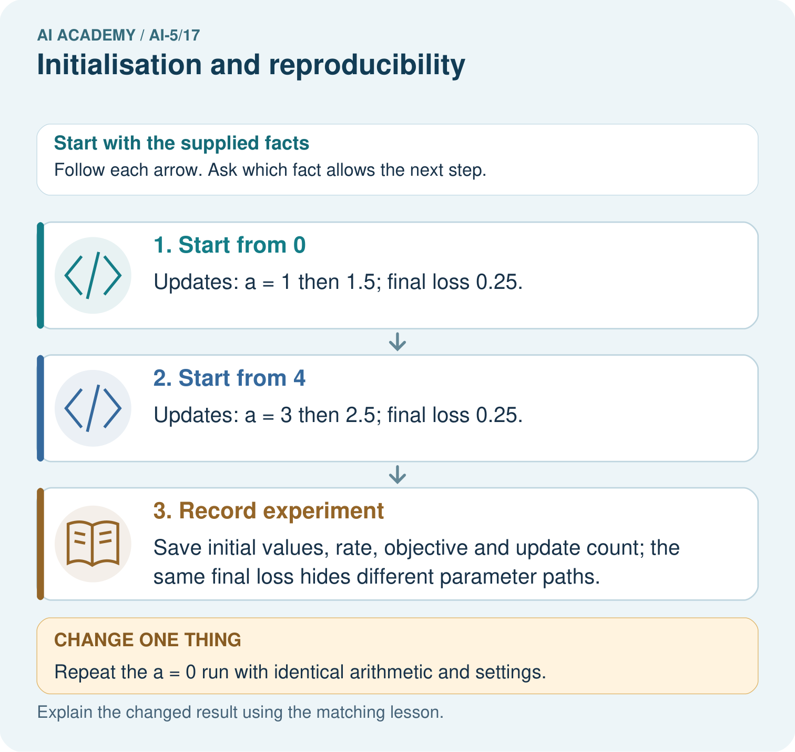

AI Academy · Level 5 · Grade 10 · Week 17 · Teacher guide
Initialisation and reproducibility
Learn to understand, design, build, test and explain AI systems responsibly.
Project: Image-pattern Network Investigation
Teacher guide · 1 of 6
Prepare the purpose, prerequisites and materials
Teach the learning cycle
Primary target: Trace how starting values affect a fixed training budget
| Session | Sequence and minutes | Resources |
|---|---|---|
| Session 1 · Understand · 45 min | 0–7: recall and prerequisite; 7–15: inspect the concrete case and predict; 15–30: teacher models the worked trace; 30–40: learners explain a step using the text and visual; 40–45: check the core idea. | Sections 1–6; record the brief recall in the workbook. |
| Session 2 · Practise · 45 min | 0–5: retrieve the procedure; 5–15: W2 completion practice; 15–23: explain and check with a partner; 23–30: each learner answers the misconception check; 30–40: targeted reteaching or a harder variation; 40–45: prepare the investigation. | Sections 7–10; use the matching workbook W2 and misconception check. |
| Session 3 · Investigate and transfer · 45 min | 0–5: retrieve the decision rule; 5–20: investigate or trace; 20–30: start the independent case; 30–38: connect the project; 38–43: act on feedback; 43–45: plan the return check. | Sections 9 and 11–14. Give extra time to finish the full task set; use Section 15 when the week includes a coding lab. |
This is a starting allocation of 135 minutes, not a validated duration. Preserve all named topics. Schedule extra time for connected examples, the full investigation, independent cases and project building. Repeated copies of a case share one recorded attempt; they are not new evidence.
Retrieval answer guidance
Regularisation and early stopping
Without opening the old lesson, explain one key idea from Regularisation and early stopping. Give an example and a mistake that the idea helps you avoid.
Look for: Separate a weight penalty from prediction error
Reference example, not the only acceptable wording: Teacher explanation: MSE 0, penalty 2, total J 2, total gradient 2. Zero data gradient does not remove the penalty gradient.
Learning rate experiments
Without opening the old lesson, explain one key idea from Learning rate experiments. Give an example and a mistake that the idea helps you avoid.
Look for: Run a controlled comparison of learning rates
Reference example, not the only acceptable wording: Teacher explanation: First v = 0.5 with MSE 5.625. Second gradient -7.5 gives v = 0.875 and MSE 3.1640625. Distance is multiplied by 0.75 each step.
Updating parameters
Without opening the old lesson, explain one key idea from Updating parameters. Give an example and a mistake that the idea helps you avoid.
Look for: Apply a learning rate to an ordered gradient
Reference example, not the only acceptable wording: Teacher explanation: New a = 2 - 0.2 times -3 = 2.6.
Use two 45-minute sessions. Keep the scalar initial-value experiment separate from the four-parameter symmetry example. No full-network training library is needed. Derive the local gradients verbally from residual and output sensitivity, or verify them with numerical probes. Do not teach that all zero values are forbidden or that a seed proves correctness.
Outcomes
Trace how starting values affect a fixed training budget
Explain a simple hidden-unit symmetry
Record enough information to replay and audit a classroom experiment
Preparation
Printed lesson and workbook; paper and pencil
Calculator and optional local Python 3 editor; no packages or AI accounts needed
Use the fictional examples supplied; prepare the fresh retry before class
Prerequisite answer
The stopping state can differ from the best observed state. Reproducing the reported model requires the actual saved parameters selected by the declared rule.
End goal for the pictorial case
By the end, I can explain initialisation and reproducibility using a traced example and a stated limitation.
This added worked case illustrates the week’s main idea. Retain all original and connected topics; schedule its practice within the teaching cycle.
Teacher guide · 2 of 6
Explain and model the mechanism
Return to h = ReLU(x), y = vh, training pairs (1, 2) and (2, 4), ordinary MSE and a frozen hidden unit. Only v is trained. Keep full-data updates, learning rate 0.1 and exactly two updates. Compare initial v values 0, 1 and 3. This experiment changes only the start.
The gradient is 5(v - 2), so each step gives new v = 0.5v + 1. Signed distance from 2 halves on every update. Different starting distances therefore produce different losses after this finite budget, even though all three runs approach the same minimum if this exact procedure continues.
The equal losses for starts 1 and 3 arise because they are equally distant from 2. They do not have equal final parameters. This simple convex example does not show the multiple solutions or inactive units that can occur in larger networks.
A pseudorandom generator produces a sequence determined by its state. In the same Python setup, recreating a local generator with the same seed and making the same calls reproduces the sequence below. Saving the generated values also removes ambiguity about which draw became which parameter.
The four random numbers illustrate a saved initialisation sequence; they are not used in the three separate scalar training runs. The range [-1, 1] is a classroom choice, not a general recommendation for network initialisation. An extra random draw before assigning weights shifts which value is used, even if the seed stays the same.
| Term | Meaning |
|---|---|
| Initialisation | The procedure that assigns model parameter values before training |
| Seed | A value used to initialise a pseudorandom generator |
| Symmetry | An equivalence between parts of a model that can keep their computations identical |
| Reproducibility record | Saved data settings code and results that let another person check how an experiment was performed |
Identical units receive identical updates
Guided: initially output 2 and squared error 1. After all four weights become 0.8, hidden activations are [0.8, 0.8], output 1.28, residual 0.28 and squared error 0.0784. Both units still match. Exit: differing random-call and batch orders are changed conditions, not automatic proof of a defect. Compare saved initial arrays and intermediate traces under matched settings, then check against independent expectations.
Model the reasoning aloud
Use the complete worked example below before asking learners to complete W2. Reveal a small part, invite a prediction, then explain the deciding step. These teacher notes contain solutions; do not reveal the independent case answer during modelling.
Identical units receive identical updates
| Thinking move | Teacher prompt |
|---|---|
| Plan | What is given? What is the question? Which procedure fits these facts? |
| Do | Point to each input and intermediate step in the worked trace. Name the rule that allows the next step. |
| Check | Does the output answer the question? Which assumption or limitation prevents a larger claim? |
Use the diagram and verbal explanation together. Ask learners to match a sentence to a specific visual step; do not assign learners fixed visual or auditory learning styles.
A pictorial worked case: Initialisation and reproducibility
Reproduce two training traces by saving their distinct initial values.
The facts we will use
LossJ(a)=(a-2)²; gradient 2(a-2); rate 0.25; two updates. Restart from a = 0 and separately a = 4.
All inputs and outcomes in this worked example are invented classroom data; no real model run is claimed.

Read the picture one step at a time
Why this result follows
Initialisation supplies the parameter values before learning begins. The same update rule can follow different paths from different starts. Here the two paths end on opposite sides of two and have equal squared distance, so equal loss does not imply equal parameters. Save initial values and settings to reproduce this arithmetic, as well as the final result.
What this example does not establish
A saved seed alone does not reproduce every software or hardware execution; record environment and nondeterminism too.
Change one thing in the pictured case
Change: Repeat the a = 0 run with identical arithmetic and settings.
Prediction: It again reaches1 then 1.5 in this deterministic toy calculation.
Reason: Identical initial state and update rules determine the same arithmetic trace.
Ask while showing the picture
Cover the result. Ask learners to name the inputs and predict the next step. Uncover one step, connect the icon to the actual procedure, and explain its evidence. Then change the supplied condition and compare. The picture is a representation; it does not document execution of a real AI model.
Teacher guide · 3 of 6
Demonstrate and guide practice
| Time or stage | Teacher action |
|---|---|
| Session 1 start to 7 minutes | Retrieve checkpoint state and agree on the fixed two-update experiment. |
| 7 to 18 minutes | Trace the three starts in the table and complete W1 with signed distances. |
| 18 to 32 minutes | Use W2 to distinguish equal loss from identical model parameters. |
| 32 to 45 minutes | Run or trace the local generator example and use W3 to discuss random-call order. |
| Session 2 start to 8 minutes | Trace the separate symmetric two-unit model and complete the guided output calculation. |
| 8 to 20 minutes | Compare activations for hidden weights 1 and -1, then discuss the all-zero product example. |
| 20 to 35 minutes | Collect W4 independently, requiring a reset and a complete trace for each start. |
| 35 to 45 minutes | Use W5 and the exit response to build an experiment record, then administer the fresh retry. |
Use the worked example in Sections 3 and 6. Collect a prediction before revealing its result; ask the learner to point to each intermediate fact.
Provide a number line and a ledger for start, gradient and updated value. Save concrete arrays instead of relying on seed vocabulary alone. Extension: use symmetric differences with step 0.001 to check all four initial gradients in the positive-region two-unit example, then explain why identical computations preserve symmetry.
Reduce help deliberately
Completion task: The lesson runs starting at 1 and 3 finish with the same training MSE. Give their final v values and explain the equality without calling the models identical.
Teacher check: Teacher explanation: They finish at 1.75 and 2.25. Both are distance 0.25 from 2, so both have MSE 0.15625. Their predictions for nonzero positive inputs differ.
Start by identifying the given inputs together. Leave the intermediate steps blank. If needed, model one step, then withdraw that help on the next step. Move to a full trace only when the partial trace is understood. For partners, alternate explainer and checker; collect a response from every learner before discussion.
Individual reasoning check
Use the worked case for Initialisation and reproducibility. Proposed explanation: “The same seed specifies the entire experiment”. Decide whether this explanation is supported. Point to the step or supplied fact that decides; explain your repair if needed.
Expected correction: Data, call order, batching, code and numerical environment also matter.
Collect explanations, not only yes/no votes. If a misunderstanding is common, re-model the relevant step for the class. If it affects a few learners, give a short targeted group explanation while others solve a more demanding variation.
Pictorial practice question
Does the matching final loss mean the parameter values are equal? Point to the relevant step in the picture, then write the changed result and the rule or evidence that supports it.
Reasoned teacher answer
No. Final parameters1.5 and 2.5 are different, although both lie0.5 from the optimum and have loss 0.25. Changed-case check: It again reaches1 then 1.5 in this deterministic toy calculation. Identical initial state and update rules determine the same arithmetic trace.
Changed-case reasoning: It again reaches1 then 1.5 in this deterministic toy calculation. Identical initial state and update rules determine the same arithmetic trace.
Collect each learner’s explanation before discussion. Use the first missing connection between input, deciding step and result to choose support. This question is worked-case practice, not fresh mastery evidence.
Teacher guide · 4 of 6
Run the investigation and diagnose misconceptions
The same seed specifies the entire experiment: Data, call order, batching, code and numerical environment also matter.
Every parameter should start at zero: The scalar example permits zero, but identical or all-zero multi-unit initialisations can create different limitations.
Equal loss means equal models: Different parameters can be equally far from a minimum or give the same scalar loss.
Use Section 9 for the evidence ledger. Add a boundary or missing-input case and record the expected response before checking. More successful repeats of one case do not establish wider coverage.
Match the support to the first error
| What the response shows | Next teaching action |
|---|---|
| Missing or misread facts | Read the case aloud, mark supplied versus unknown facts, and let the learner restate it. |
| Wrong procedure | Return to the deciding step in the worked case. Contrast it with the proposed incorrect explanation. |
| Arithmetic or implementation error | Trace intermediate values or lines; preserve the first mismatch and retry that step. |
| Correct result without a reason | Ask for a trace and a changed case before marking independent understanding. |
| An unsupported wider claim | Ask which supplied evidence supports the claim and which further observation would be needed. |
Offer an oral explanation, drawing, enlarged visual or fewer examples when that removes a reading/writing barrier. Keep the same reasoning goal. Stretch secure learners by changing a boundary or assumption and asking them to defend the effect, not simply by assigning more of the same questions.
Teacher guide · 5 of 6
Assess and explain the answers
Guided and exit questions
Guided: initially output 2 and squared error 1. After all four weights become 0.8, hidden activations are [0.8, 0.8], output 1.28, residual 0.28 and squared error 0.0784. Both units still match. Exit: differing random-call and batch orders are changed conditions, not automatic proof of a defect. Compare saved initial arrays and intermediate traces under matched settings, then check against independent expectations.
W1 Trace a fresh starting value
For the scalar lesson model, start v = -2 and apply two updates at rate 0.1. Give all three v values and the final training MSE.
Teacher explanation: States are -2, 0 and 1. Final training MSE is 2.5. Each step halves the signed distance from 2.
W2 Distinguish equality of loss and parameters
The lesson runs starting at 1 and 3 finish with the same training MSE. Give their final v values and explain the equality without calling the models identical.
Teacher explanation: They finish at 1.75 and 2.25. Both are distance 0.25 from 2, so both have MSE 0.15625. Their predictions for nonzero positive inputs differ.
W3 Audit a seed claim
Both runs use the same seed and generator. Run A assigns the first four draws to its weights. Run B draws a preview number first, then assigns the next four. Must the initial weight arrays match? What should be saved?
Teacher explanation: No. Their positions in the generated sequence differ, though coincidental equality is not logically impossible. Save the actual initial arrays, parameter order and random-call procedure as well as the seed.
W4 Transfer the starting-value experiment independently
Use J(a) = (a - 3) squared, gradient 2(a - 3), rate 0.25 and two updates. Restart from a = 1, then restart from a = 5. Calculate both traces and final losses. Explain what can be concluded about these two runs.
Teacher explanation: Start 1 gives 1, 2, 2.5 and final loss 0.25. Start 5 gives 5, 4, 3.5 and final loss 0.25. Equal initial distances yield equal final losses under this rule, but the final parameters differ.
W5 Test repeated correctness
A forward-pass program returns the same wrong answer every run with a fixed seed. Has repeatability verified the implementation? Name two stronger checks.
Teacher explanation: No. Compare intermediate values with independent hand calculations, test shapes and boundary cases, or compare analytical gradients with numerical probes away from activation corners. Repeating the same result only checks consistency.
Independent assessment and fresh retry
W4 requires traces ending at 2.5 and 3.5, both with loss 0.25. Fresh retry: J(c) = 2(c - 1) squared, gradient 4(c - 1), rate 0.125 and two updates. Start -1 gives -1, 0, 0.5; start 3 gives 3, 2, 1.5. Both final losses are 0.5. Require a conclusion restricted to the declared runs.
Assess independent transfer
Selected case: Use J(a) = (a - 3) squared, gradient 2(a - 3), rate 0.25 and two updates. Restart from a = 1, then restart from a = 5. Calculate both traces and final losses. Explain what can be concluded about these two runs.
Selected case answer
Teacher explanation: Start 1 gives 1, 2, 2.5 and final loss 0.25. Start 5 gives 5, 4, 3.5 and final loss 0.25. Equal initial distances yield equal final losses under this rule, but the final parameters differ.
| Dimension | Evidence required |
|---|---|
| Explanation | Names the applicable idea or procedure and ties it to the supplied facts. |
| Trace and result | Preserves the given inputs and shows the relevant intermediate steps; distinguishes a prediction from an observed execution. |
| Limits | States the assumptions, missing evidence or conditions under which the result would change. |
Record each dimension as not yet, with support, or independent. Accept a valid alternative procedure with a defensible trace. Do not penalise an honestly recorded model failure if the learner correctly explains its evidence and limits.
Feedback that the learner uses
Name the earliest unsupported step and give one action to repair it. Have the learner make that repair now and explain why. Then assess the relevant skill on a fresh, fully specified case. Confirm it was not previously practised with feedback; solve and check the new case before assigning it. A follow-up design prompt is a starting brief, not automatically an equivalent test.
Teacher guide · 6 of 6
Connect the project, support and next lesson
Add a labelled initialisation and reproducibility evidence sheet to Image-pattern Network Investigation. Show how you can trace how starting values affect a fixed training budget. Use the supplied fictional case and keep its inputs, intermediate steps, calculation or prediction, and limitation. Connect this record to last week’s record; a matching answer without a trace is insufficient.
Provide a number line and a ledger for start, gradient and updated value. Save concrete arrays instead of relying on seed vocabulary alone. Extension: use symmetric differences with step 0.001 to check all four initial gradients in the positive-region two-unit example, then explain why identical computations preserve symmetry.
Week 18 debugs dimension contracts, gradient order and update direction.
Retain the project ledger and assess a changed case after support. Check the relevant prerequisite before carrying this component forward.
Plan the delayed return
Suggested return points in this level: ai-5/18, ai-5/20, ai-5/23. Use actual classroom dates, adjusting for holidays and gaps. One, three and six teaching weeks are scheduling choices, not a claimed optimal spacing.
At a delayed check, ask for the idea from memory and a changed application. Compare with the earlier independent response and record support used. For a new level, revisit the previous capstone before checking the new prerequisites.
| Record | Teacher evidence |
|---|---|
| Learner code and date | |
| Concept and case used; prior exposure | |
| Explanation / trace / limits | |
| Support and first repair | |
| Changed case and delayed outcome | |
| Next teaching action |
Use the evidence to choose reteaching or the next step. A completed page, confidence rating or attractive project does not by itself demonstrate understanding.
Project evidence from this case
For your Image-pattern Network Investigation, save the input, procedure, observed result and limitation of this check. Label this worked example as practice; use a different, previously unreviewed case when checking independent understanding.